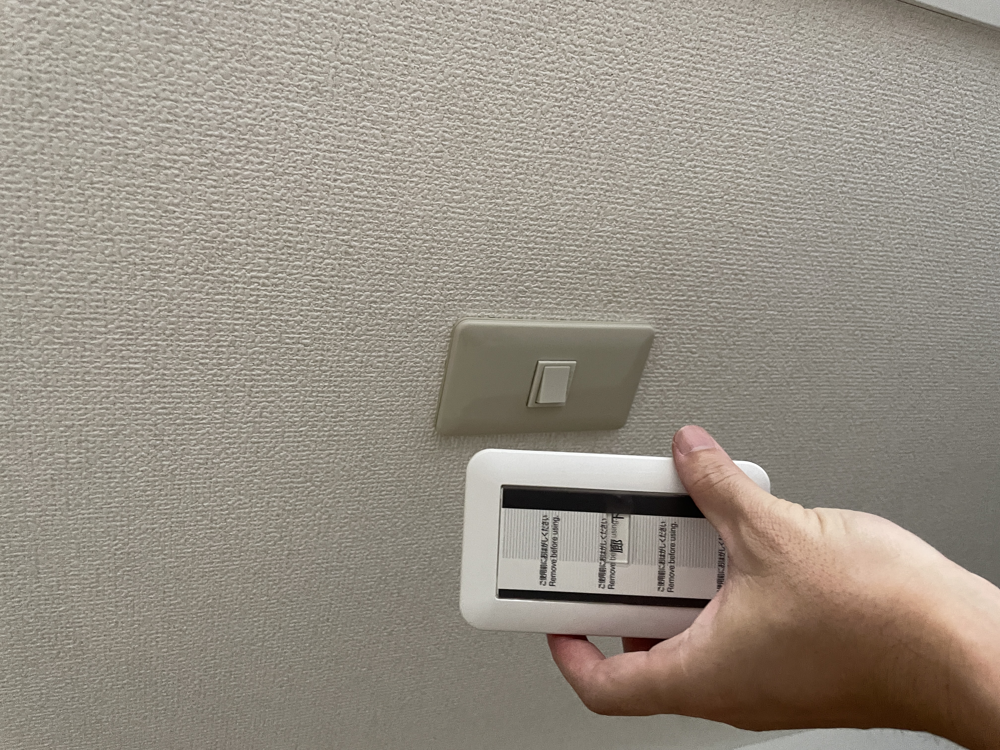
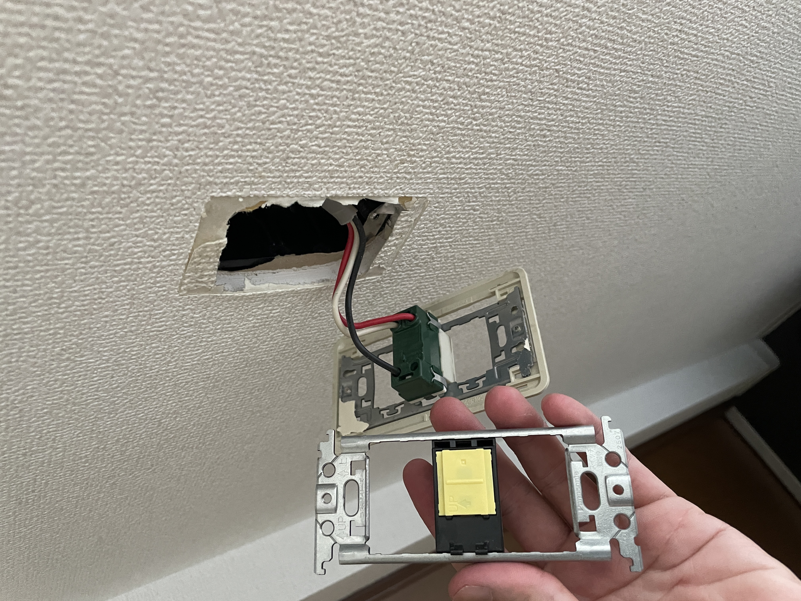
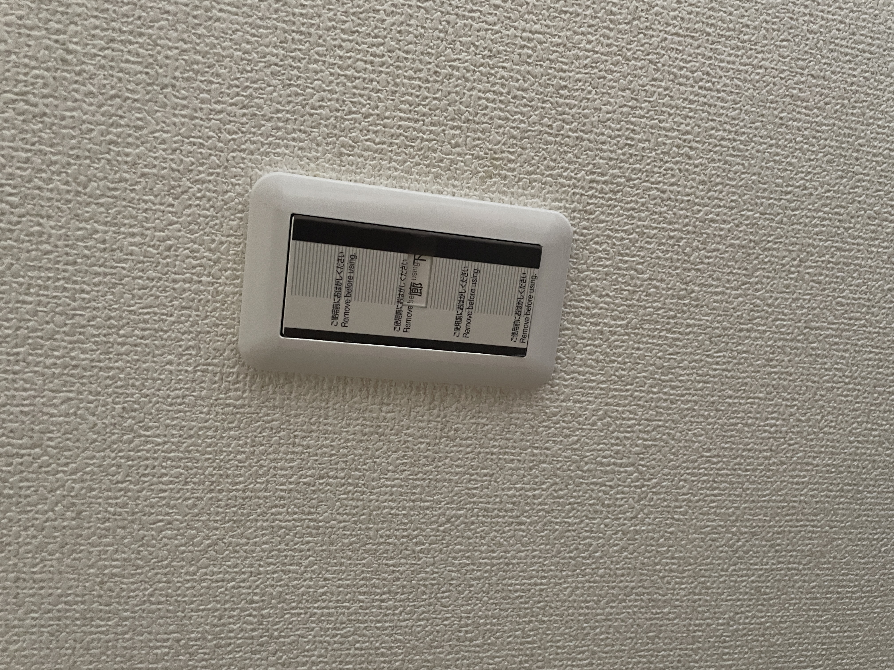

工事実績 / スイッチ交換
壁のスイッチを交換しました
こんにちは、滝沢の御用聞きです。今回は、壁に取り付けられたスイッチを交換した現場をご紹介します。交換前のスイッチ、作業中の様子、新しいスイッチを取り付けた状態を写真にまとめました。
交換前：新旧のスイッチを見比べて

交換前は、小さな操作部分のスイッチが付いていました。新しいスイッチと並べると、操作部分の大きさやプレートの色・形の違いが分かります。
作業中：スイッチ交換の様子

こちらは交換作業中の写真です。普段はプレートの内側に隠れている器具と、壁の取付部分が写っています。完成した状態だけでなく、作業途中の様子も実績としてご紹介します。
取付後：大きな操作部分のスイッチに

新しいスイッチが壁に収まりました。白いプレートと縦長の操作部分で、交換前とは印象が変わっています。写真では「廊下」の表示も見えます。
住まいの小さな困りごとも、ご相談ください
「このスイッチも交換できるかな」と思ったら、まずはご相談ください。普段使っている状態の写真と、気になっていることをお送りいただくと、お話が進めやすくなります。写真を撮るためにカバーを外す必要はありません。
行徳・妙典周辺の住まいの困りごとを、滝沢の御用聞きが伺います。LINE写真相談は0円です。対応内容を確認し、作業前に金額をご案内します。料金目安もご覧いただけます。